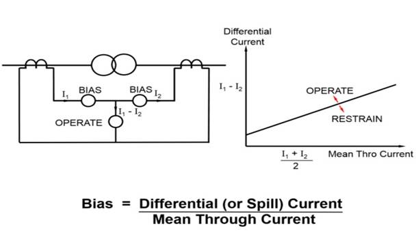

Theory and Procedure of the Experiment - 10
Differential Protection
A transformer is a static device totally enclosed and generally oil-immersed. Thus, chances of fault occurrence on them are rare. However, consequences even so, could be very serious unless the transformer is quickly disconnected from the system.
Power transformers are classified as one of the most valuable equipment in a power system, hence their protection is of very high importance. The transformer differential protection provides fast tripping in case of a fault - before severe damage spreads out. Such faults are:
• short circuits between turns, windings and cables inside the transformer housing
• earth faults inside the housing
• Short circuits and earth faults outside the housing but within the protected zone (e.g. at bushings or supply lines).

Diagram of Biased Differential Protection
A differential relay is one that operates when the phase difference between the two or more similar electrical quantities exceeds a pre-determined value.
- Switch ON CB for input supply
- Press the start button.
- Note the current flowing in the three phases in normal mode
- Create a single phase to ground fault by pressing button F1.
- Observe that the input current in one phase is greater than remaing two phases.
- The differential relay tripped the transformer supply and LED indicator glows for single phasing fault.
- Reset the relay by pressing reset button.
- Repeat the process for other faults.